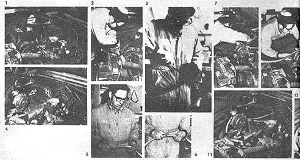

Propane Conversion: How To Make Lpg Cars
Liquid propane can be a low-emissions alternative fuel for cars. With the right vehicle and know-how, you can have a natural gas car.
By the Mother Earth News editors
May/June 1972
It works. New York, Maine, Tennessee, Florida, Arkansas, Texas, Utah, California . . . I've traveled miles and miles and miles in a VW bus converted to run on LP (liquid propane) and the easy-to-install system really does result in lower operating and maintenance costs, much longer engine life AND 70% less air pollution.
(Note from the editors: This conversion is for non-fuel-injected vehicles.)
Unlike gasoline, LP (and from here on, whenever I say LP you can take it to mean liquid propane, homemade methane or natural gas . . . the system will work on any of these) enters your engine as a completely vaporized fuel that's free from lead, carbon, gum, sulfur and most pollutants. LP won't foul your car's plugs, ruin its valves, contaminate its oil, wash down its cylinder walls and rings, burn out its muffler . . . OR destroy the air we all breathe. And while mileage and performance are about the same as with gasoline, cost per gallon of LP generally runs about 15% less than you've probably been paying for fuel.
So what are the disadvantages of this low-polluting system? First, it'll cost you something over $100 (including everything) to do your conversion . . . a bit of money even when you consider that the equipment will transfer readily to your next vehicle. Second, filling up an LP tank simply isn't as convenient as stopping at a gasoline station. However, only a few times in 15,000 miles have I found LP so inaccessible that I was forced to use the other half of my dual system and switch over to gasoline for a while.
There's absolutely nothing new about LP conversion. Excellent equipment of the kind I'm using has been around for over 40 years and more than 250,000 vehicles-mostly trucks, cabs and forklifts-are currently operating on LP. The hardware is well proven.
Equipment
You'll need five major pieces of equipment to convert your car to LP. All are available from most any LP dealer (with a little help from a hardware store on fittings), although you might want to try getting a used tank from one of the large forklift users or any of the businesses listed under "Gas, Liquified Petroleum, Bulk". If necessary, write to National LP Gas Association, for help in locating equipment dealers near you. OK. Here's what you'll need:
1. A FUEL TANK. Use only a regulation motor vehicle LP tank made to ASME, ICC or DOT specifications. Such a container has all the safety features required by law and common sense, comes with a gauge, has terrific rupture resistance and is built to last forever.
2. A CONVERTOR, or "demand regulator" that changes the liquid propane to a gas (using engine heat to prevent freezing) and supplies just as much of the fuel as the power plant demands through its carburetor vacuum. There are a number of good, time-tested convertors on the market (Century, Beam, Impco, etc.). I've been satisfied with the Century in my bus but I've just done a conversion with an Impco that seems even better.
3. A SPUD-IN JET for your engine's carburetor (two if there are two carburetors).
4. TWO HOSES. One (A) to take liquid propane from the fuel tank to the convertor and another (B) to carry vaporized fuel from the convertor to the carburetor. Hose A must be super-duper aircraft quality and you'll probably have to order it to length and diameter specifications (in which case it'll come with fittings on either end). Hose B can be the ordinary rubber variety since it'll contain very little pressure. About 8' of A and 2' of B should do it.
5. FITTINGS AND HARDWARE. This will sound complex but don't panic. To conduct engine heat into and out of your convertor you'll need a foot or so of heater hose and two Y fittings for a water-cooled engine . . . or some 3/8" O.D. (outside diameter) copper tubing and a flare adapter nipple for a VW. A fitting to adapt hose A to the convertor's LP-in port. A brass reducer to step the convertor's vapor output down to standard 5/16" O.D. fuel line size. A standard on-off valve (with suitable fittings) to insert in the gas line. Enough single-strand electrical wire (bell wire) to run from the convertor to the car's dash. A doorbell-type switch for the primer. Water-hose clamps and compression fittings, miscellaneous nuts and bolts and-if desired or needed-plastic fasteners for attaching the hoses to the car and steel braces for mounting the LP tank.
Costs - Roughly (1972)
Standard retail convertor costs average about $55 (the Century G85A) for a VW, $45 (Impco JO) for other engines under 150 HP and $70 (Impco EO) for larger power plants.
Hoses (hose A is expensive, but it doesn't pay to cut corners here) are about $16 and a jet will set you back $1.00, fittings and hardware $6.00 and shipping (if necessary) $3.00.
A new 14-gallon pressure tank costs around $70 but I got mine used for $35 at the first place I asked. Figuring that as average for a do-it-yourself installation, the grand total for a VW conversion comes to $116, other engines under 150 HP add up to $106 and larger power plants tally out to $131.
Tools and Supplies
You'll need a minimum of two adjustable wrenches or one adjustable wrench and a set of open or box end wrenches; a good screwdriver of the correct size; pliers; a hacksaw; electric drill and bits up to 1/2" (up to 9/16" for a VW); hammer and punch; 1/8" NPT (National Pipe Thread) tap (VW people will also need a 3/8" NPT tap and a chisel; a vise, if possible; small tube of pipe-joint sealer; a tube of plastic rubber . . . and a friend or two to help lift the tank into place and lend moral support throughout.
Instructions
Detailed instructions should accompany your convertor. What follows are simply my thoughts on doing the job without some of the normally recommended equipment. . . and adapting the conversion instructions (written mainly for water-cooled engines) to the VW.
Installing the Tank
Mounting a propane tank in standard cars is mostly a matter of common sense. With a VW, though, you may have to put the fuel container on rather than in the vehicle. My friendly welder charged me $5.00 for my custom roof mount (the bracket was coated with canned spray paint to prevent rust) firmly attached the fuel tank base to my van's roof with six 5/16" bolts that were secured with nuts and lock washers which were-in turn-sealed with little globs of plastic rubber
Installing the Convertor
If your car has a water-cooled engine, you'll heat the convertor by running hot water through it from the power plant's cooling system. This is extremely simple if the system is the type that always circulates hot fluid through the automobile's greater whether it's in use or not) Just cut through the hose that takes hot water to the heater and put the convertor directly into that line.
Other water-cooled systems are more complicated to tap but the process isn't hard. See the set of instructions that come with your convertor and remember to use pipe-joint sealer on all connections.
If you have a VW or other air-cooled engine, you're going to use exhaust heat to warm the convertor. Start by drilling a 9/16" hole in your car's muffler. Where? Scrooch down on your back underneath the VW with your feet behind the right rear wheel and your head behind the left rear tire. See where the muffler is attached to the heater box by semi-circular clamps and long, skinny bolts? Just to the rear of those clamps is where you drill . . . horizontally.
Now tap threads into the hole using a 3/8" NPT tap. I've found it easier not to use a tap handle for this . . . instead, just apply pressure to the shank of the tap with your thumb while turning the tap with whatever wrench fits (usually 5/8"). If you have a socket set, it'll work really well for turning the tap in . . . use the ratchet and a 5/8" socket.
Next attach the 3/8" O.D. copper tubing to a nipple screwy screwed into the hole you've just drilled and tapped. Drill a 3/8" hole up through the engine compartment floor (slightly to the left of the power plant for the VW bug. . . into the far left engine compartment space for the bus). Shove the other end of the copper tubing up through this hole and attach it to one side of your convertor's water tunnel with a ferrule-type compression fitting as the unit is lying on its side with the primer button pointing at you.
Attach a second length (like one foot) of tubing to the other end of the convertor's water tunnel, drill another 3/8" hole in the engine compartment floor (about a foot away from the first), run the tubing out of the engine compartment and bend it so that it ends up horizontal and pointing straight back the holes in the floor with plastic rubber and secure your convertor to the engine.
Now the VW and the non-VW folks are back together again for the next step of bushing down the convertor's LP-vapor-port to a 5/16" O.D. nipple so that hose B may be attached. Secure the hose with small clamps and leave it dangling till law.
Just how hose A will run from the LP tank to the convert will be determined by the design of your particular auto. In U.S. vehicles the path is pretty direct . . . from the tank on the trunk shelf, through the trunk floor, under the car and up into the engine compartment. In VWs you'll have to cut a suitable hole to let hose A into your engine compartment. The higher up the hole the better (right over the taillight is best in the bus) to keep hose A out of harm's way in case your car gets bumped. Drill a 1/2" hole and widen it with your chisel until hose A passes through.
Attach one end of the "A" hose to the LP-in port of your convertor (using an appropriate fitting) and the other end to the LP-liquid-out port of the fuel tank. If you've drilled a hole, use plenty of plastic rubber to seal it once hose A is in place and secure the hose to the outside of the car with a few plastic-coated clamps wherever it seems to need it.
Installing the Jet
You can install the necessary conversion jet without removing your car's carburetor, but you're likely to get small metal shavings in the engine while doing it . . . and that's not healthy. So get the carb out. The air cleaner comes off first, then the two or four bolts that attach the carburetor to the intake manifold and then whatever other linkages and whatnots are still holding the thing in place.
On a VW, loosen the clamp that holds the air cleaner to the top of the carburetor and remove the cleaner. Then pull off any wires (none, one or two) that you see going to the right side of the carb and don't worry about mixing them up . . . it doesn't matter in what order you put the wires back on.
Take off the two cloth-covered tubes on the left side of the carb and unscrew the two 13 mm bolts that hold the carburetor to the manifold (a 1/2" wrench will work if you don't have a 13 mm one). As you lift the carb off, you'll find that it's still held by a connection to the accelerator cable, the end of which passes through a little cylinder clamp which has a small setscrew in its side. Loosen the setscrew and slip the cable out . . . but be careful you don't lose the cylinder clamp, which is now free to drop out. Note where it goes and store it in a safe place.
Now with the carb on the workbench, preferably in a vise, drill a 5/16" hole into where the up-down passageway (throat is narrowest . . . the exact spot is not at all critical, but you don't want to pick a place where you're going to drill through the float bowl or something. Check out a VW carb while it's still on the engine and note that right at the midpoint (up-down) and slightly to the right there's a raised round place with a smaller round depression in the middle . . . a perfect place to drill.
The carburetor is aluminum, so cutting will be easy, with some sticking near the end and lots of flying shavings all along. Don't let the shavings bother you . . . just try to drill straight and don't worry if things begin to seem mighty fragile. As you finish, look down into the carb and go easy to make sure the bit doesn't strike through forcefully enough to damage something inside the carburetor throat.
Now get out that 1/8" NPT tap and a tap handle if you have one (a wrench if you don't). Tap threads into the hole as far as you can, watching down through the carb to be sure you stop the tap just before it strikes anything inside the throat. Then screw the jet into the hole as far as it will go without striking anything (but no further than halfway through the throat). Finish with the jet's bevel pointing down. If you have two carburetors, simply repeat the procedure on the second one.
Apply some pipe-joint sealer, pour gasoline over the carburetor-inside and out-to get all the shavings and grime off and replace the carb. On a VW, put the cylinder clamp back in place after the carb's in and the two 13 mm bolts are secured . . . then have a friend climb into the car and depress the accelerator pedal. This will help you line up the accelerator cable with the cylinder clamp and then you can gently ease the cable end into the clamp as your friend lets up on the pedal. With the pedal all the way up and the lever holding the cylinder clamp as straight up and down as it'll go, tighten the setscrew on the cylinder. Then replace wires, tubes and air cleaner.
For the final step, connect the dangling end of hose B-already attached to the convertor's LP-vapor-out nipple-to the jet and secure it with a small water-hose clamp. For a two-carburetor system, get a simple Y fitting and install it into hose B (bottom toward convertor) and then run lengths of hose B off the two Y arms to each carb.
You're done with the only substantial change you'll make in your car's engine.
Finishing the Installation
Locate the hose or metal tube that runs down from the top of your carburetor to the fuel pump, cut it right in the middle, install the on-off valve where you made the cut and put things together with compression fittings. Don't install the valve anywhere in the fuel system except between the fuel pump and the carb . . . no damage whatsoever can result from the fuel pump working against a stopped line, but much harm can come from the pump sucking on an empty line. If you have a hose-type line, you'll need to attach a small length of copper tubing (1/4" O.D.) to each end of the valve for the hose to fit over.
Finally (wow, we're almost through), connect one end of that single-strand electrical wire to the appropriate terminal on your convertor (see the diagram that comes with the unit), run the wire under the car and into the passenger compartment-through one of the grommets in the fire wall or floorboard-and attach it to a simple push-button, doorbell-type switch.
Run a short length of the same kind of wire from the other terminal of the switch to your car's fusebox. Holding the switch in the "on" position, take out one fuse and touch the bare end of the wire first to one and then to the other end of the fuse holder. Repeat the process on down the line of fuses until you find a fuse holder where one side sparks and the other doesn't. Attach your wire to the side that doesn't. Replace the fuse and affix the switch inside the car wherever you'd like . . . you'll use it to operate the convertor's primer, which gives your engine a shot of LP vapor just before you start it up.
And you're ready to start it up just as soon as you get your LP tank filled.
There'll still be gasoline in the car's carburetor so, before you take that first LP drive, turn the gasoline on-off valve to "off" (perpendicular to the line), start your car as usual (what used to be usual, anyway) and let it run for a few minutes until it uses up the gasoline in the carburetor and conks out. Now open the liquid-out valve of your LP tank, turn on the key, hit the primer button for two seconds and start 'er up. Hurray! You're driving on LP gas!
When you run out of LP, just turn on your gasoline valve and crank the engine (you'll need a battery that's in good shape) until sufficient gasoline gets up into the carb (pumping the accelerator pedal may help). After you've filled up with LP again, turn the gasoline valve off and start the car a second time. For a few minutes the air-fuel mixture will be too rich and the engine will sputter, but the car will return to its usual purr once the gasoline in the carb is burned off.
Adjusting the Air-Fuel Mixture
If the engine idles just about the same as it did on gasoline you've hit things just right. If it's a tad slower, turn the idle screw up a bit and smile . . . you're still in good shape. Chances are, though, the engine will tend to conk out when you let it idle because your LP-air mixture isn't yet quite perfect.
In the latter case, drill a small hole (say 1/8") perpendicularly into the copper tube sticking out from the jet and into the carburetor (best to remove the jet before drilling). Insert any ordinary, small screw that you can just squeeze in, put the jet back and then get a friend to apply a slight but steady pressure to the accelerator pedal (to keep the engine going) while you toy with the screw. Turn it in and out and see what happens. If you can get maximum rpm without removing the screw entirely, you're all set.
But you might find that the highest rpm comes with the hole left open. If so, drill another hole, insert the screw and toy around until you get optimal rpm that you can lower by moving that screw in and out.
On the other hand, maybe your best results come when you put your finger over the hole . . . that's OK, too, because you can just tape up the hole and be done with it.
In the unlikely circumstance that a finger over the hole gives you the best idle-but one that's still nowhere near what you had with gasoline (even when you turn the idle screw up a bit)-then you need a larger jet. Before you buy one, try reaming out the opening of the jet you have, using a drill bit that almost-but not quite-makes it into the opening (maybe 7/32"). If that still doesn't do the trick, you'll just have to get a larger spud-in jet from your LP-equipment dealer .
Other Things Worth Doing
Nothing else is absolutely necessary to make your car run smoothly on LP, although there are lots of goodies you can buy and things you can do to make your conversion more elegant, convenient, efficient, etc. Things like regapping the spark plugs to .008-.010" (.018" for a VW), removing the automobile's heat riser, taking off the automatic choke, adding a filter-fuel lock, putting more sophisticated jets in the carburetor or mounting an electric solenoid switch on the car's dash so you can flip back and forth from LP to gasoline while driving.
None of these modifications will hurt the vehicle during it, short sprints on gasoline and they can all be readily undone-in fact, they must be-if your car's ever to run exclusively on : gasoline again . . . but I won't go into them here because these changes are covered in the manuals that come with LP convertors.
Here's a special tidbit for VW bus owners, though . . . turn the air cleaner around so that its snout points toward the engine compartment's side vents. That way you'll draw the coolest possible air into the power plant.
Buying Liquid Propane
Once you're off and running on LP the only trouble you're likely to have is in finding a source of fuel. You can minimize this problem by writing to Woodall Publishing Company, for a list of more than 8,000 LF dealers across the country. As LP use for campers and motor vehicles becomes more common, LP depots are proliferating and Woodall handles a fairly up-to-date guide. I Truck stops sooty also commonly sell LP.
By the way, if you're going to be in an unfamiliar unfamiliar area for a while, check (anonymously by phone) on whether LP is cheaper as a motor fuel or as a non-motor fuel. It's often possible to save quite a bit by purchasing LP for heating/cooking rather than for driving. In Vancouver, for example, LP is 20 cents a gallon for use off the road and 40 cents a gallon for use as a motor fuel, most of the difference being in road tax. Oddly enough, in some states things are the other way around . . . so check first.
If anyone tries to charge you more for LP than for gasoline, they're not giving you the bulk rate and you should protest. There's no need to pay the high prices charged for bottled gas. Remember that people aren't much used to seeing private cars run on LP yet . . . so there's lots of room for firm talking on your part and well-I-guess-it-must-be-so thinking on theirs.
Maybe it won't always be so. Maybe someday LP-powered vehicles will be the rule rather than the exception . . . and maybe then we can all start enjoying the cleaner air that results from the use of LP gas as a fuel for motor vehicles.
 MOTHER EARTH NEWS EDITORS Liquid propane is a tried and tested low-emission fuel. |
 MOTHER EARTH NEWS EDITORS The photos shown here and in the next image in the Gallery illustrate a dual-fuel conversion made to the personal car of James Couillard, Editor of LP-GAS Magazine. The automobile is a 1966 Chevrolet Impala with a 283 cu. in. V-8 engine. Bud Eggen, Northern Propane Gas Company's carburetion specialist in Alexandria, Minnesota - assisted by Harlam Dreger - performed the job in less than four hours. The feature from which this sequence is taken originally appeared in the May, 1970 issue of LP-GAS and has been taken from an IMPCO reprint at the suggestion of Walter Blouch. 1. Plan location of all component parts. Use convertor and fuel filter lockoff mounting bracket ( ->) ifossible, for neatness and stability. Note that the carburetor adapter( -> ) is mounted directly on the original gasoline carburetor. Only the air cleaner assembly has been replaced. 2. When planning water line installation, use separate openings on heads and water pump to keep separate from car heater. If this is not possible, tee into heater lines close to block. Eggen used black iron tees. 3. Tighten screws on convertor, fuel filter lockoff and carburetor before installation. This procedure could well eliminate a later service call or a dissatisfied customer. 4. Always mount the convertor ( -> ) in an upright position. It should be as close as possible to the carburetor ( -> ) thereby keeping the vapor hose short. 5, 6. Push lock hose fittings are used for appearance, durability and ease of installation. 7, 8, 9, 10. When measuring and installing water lines, make sure hot water from thermostat side of engine is going to lowest convertor water opening ( -> ) and line from pump suction side of the water pump is going to the convertor's highest opening ( -> ). 11. Note neat appearance of water line installation by using push lock fittings and hose. |
MOTHER EARTH NEWS EDITORS 12. The gasoline fuel lock ( -> ) is installed between the gasoline fuel line and the carburetor. 13. Overview of dual-fuel conversion through the water lines and lockoff installation stage. 14. The top of the Imperial mixer and air cleaner is removed so mixer can be installed on adapter. 15. A Boden choke wire is connected to the mixer. It is used to open the mixer to allow for increased intake of air when the engine is operating on gasoline. 16. Imperial mixer installed on carburetor. 17. The conversion under the hood is completed with the installation of the liquid hose to the fuel filter lockoff, the vapor hose ( -> ) and electrical wiring. 18. In this particular vehicle, the spare tire brackets in the trunk had to be removed. Special attention should be given passenger cars having rearwindow defrosters ( -> ) or rear-radio speakers. They should be sealed or removed. If a manifolded tank arrangement is installed, the "hidden" tank should be ordered smaller to accommodate defrosters or speakers. 19. All tank fittings must be checked and tightened before tank is installed. Special attention to small Allen wrench pipe plugs (-> ) should be given as some have been leakers. 20. The including of an electric fuel gauge as part of passenger car installations is recommended. Electrical wiring in trunk spaces should be positioned out of the way so as not to become easily snagged. The wire connection to the repeater gauge mounted on the dash can be placed under the vehicle's floor carpets to make a neater installation. 21. Stainless steel wire braid hose( -> ) is recommended for fuel lines on all propane carburetion installations. Optional equipment installed on a motor fuel tank can include a vapor takeoff valve ( -> ) so the tank can be used to fuel portable LP-gas burning appliances. |